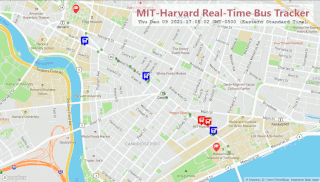
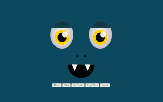

Real-Time Bus Tracker

This project provides a real-time visualization of the buses traveling along MIT-Harvard.
Buses traveling northbound are represented by red bus markers, whereas buses traveling southbound are represented by blue bus markers.
The upper right corner of each bus marker contains an indicator that represents seat capacity.
Eye Exercise

In this project, the eyes follow the mouse pointer. Clicking the Move button will toggle eyes movement and clicking Reset
will re-center eyes position. Clicking the Blink button will close and open the eyelids. Clicking the Iris Color button
will change the iris color to either yellow, red, purple, blue or green. Clicking the Pupil Size button will decrease or
increase the size of the pupils.
PacMen Exercise
In this project, there are two button options, Add PacMan and Start Game. Every click of the Add PacMan button
will add a PacMan character to the window. Clicking the Start Game button will start moving the PacMan characters that
were previously added. When the characters hit the edge of the window on the x-axis, they will change the direction they are
moving and face the opposite direction.